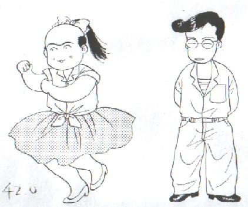

５メガあれば１年くらいは持つという見込みだったが、最近デジカメ写真をUPするようになったせいで、９カ月で容量一杯となった。割増金を払えばあと５メガ増設できるので、最初はそうするつもりだった。
しかし仮りにいまのペースで進行するとした場合、５マガではまた１年足らずで満タンとなる。１年たってまた同じことを繰り返すのもなんなので、プロバイダーに確認すると、「月額8500円のコースなら、２０メガまで可」という返事。20メガは大いに結構だが、世の趨勢から考えると、なんか高いような気がする。
そこでいろいろ検討した結果、このCOOLは、無料で20メガ゛、有料（500/月）はプラス30メガだということがわかった（＋280メガだったかも）。これならどんなに写真をUPしても大丈夫。ということで、こちらに移動した。
といってもこれからはペース配分を考え直そうと思っているので、20メガもあれば20年は持ちそうな気もする。
それはいいが、びっくりしたのがカウンター、どうやらどこかでおかしくなったらしい。そこで現在の数字は、１６億くらいになっている（端数の５万や10万は負けといてやろう(笑)）。オープン１年未満でこの数字は、間違いなく世界一のアクセス数だ。
どうだ、ヤフー、これでも麻雀祭都を登録する気にならないか(^-^；
|